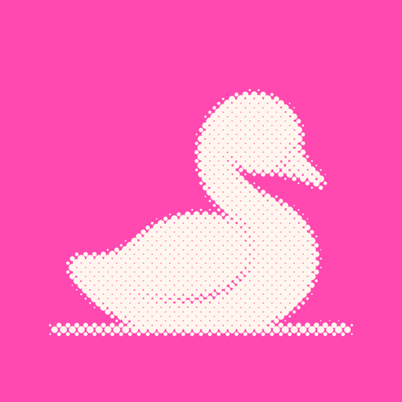
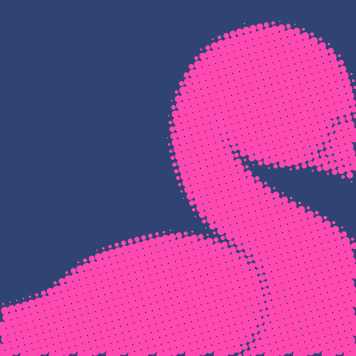
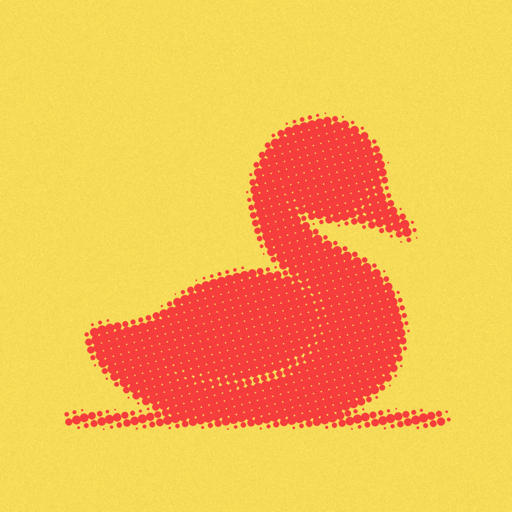
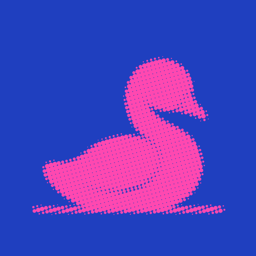
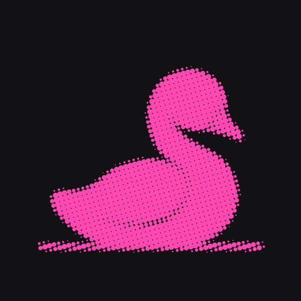
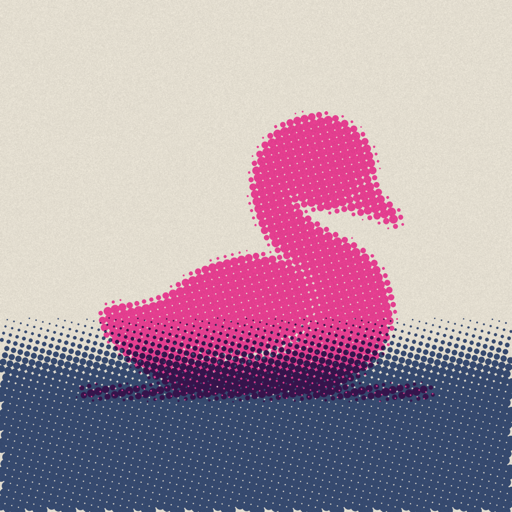
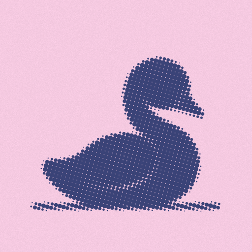
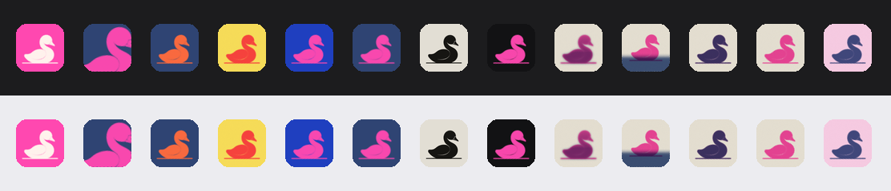

Which cygnet would win on the App Store?
Thirteen halftone icons, graded on what can be measured before launch, against the real icons of the ten apps Idyll will sit next to in search (SocialLite, Opal, one sec, BePresent, ScreenZen, Brick, Unscroll, Clearspace, Forest, Freedom).


The grades
Score out of 100 weighs: small-size legibility (40%: how different the bird and its background look at 29 pixels, perceptual colour difference, higher is clearer), distinctiveness (25%: colour distance from the nearest competitor's icon), home-screen pop (20%: worst-case contrast against a dark and a light wallpaper) and colour (15%: saturation, which draws the eye in a grid).
| # | Icon | Score | Legibility | Pop | Distinct | |
|---|---|---|---|---|---|---|
| 1 | White on pinkNothing in the category is pink; jumps off dark and light home screens alike. | 71 | 81 | 2.2 | 133 | |
| 2 | Close-up, pink on blueThe biggest shape at small sizes; the crop feels confident, like a brand, not a clip-art bird. | 64 | 74 | 2.9 | 92 | |
| 3 | Orange on blueStrongest colour contrast, but its blue sits close to one sec's icon. | 64 | 95 | 2.2 | 37 | |
| 4 |  | Pink on yellowLoud and cheerful; weaker on light home screens. | 47 | 81 | 1.5 | 59 |
| 5 |  | Pink on Klein blueVery saturated; the blue is near Unscroll's. | 44 | 67 | 2.3 | 58 |
| 6 | Pink on blueThe original favourite; solid but less distinct than K. | 42 | 73 | 2.1 | 47 | |
| 7 | 1-bit inkCrisp and graphic, but grey and quiet in a grid of icons. | 40 | 79 | 1.8 | 72 | |
| 8 |  | Pink on blackSharp, but black is what SocialLite and Brick use. | 39 | 91 | 1.2 | 28 |
| 9 | Two inksLovely large; muddy small. | 36 | 75 | 1.7 | 71 | |
| 10 |  | Bird on a halftone lakeTells a story large; the lake disappears small. | 36 | 65 | 2.3 | 81 |
| 11 | Blue with a pink edgeQuiet; reads as a dark blob small. | 35 | 74 | 1.7 | 72 | |
| 12 | Pink on newsprintClosest to the poster, but the pale tile washes out on light screens. | 33 | 76 | 1.5 | 61 | |
| 13 |  | Blue on pinkThe weakest bird-to-background separation. | 18 | 58 | 1.7 | 64 |
Next to the competition
Ours in score order on a dark and a light home screen. Every competitor icon is a dark blue, black, white or green; none is pink, so pink owns a lane.

How to know for sure
These grades predict, they don't prove. The App Store's Product Page Optimisation lets you test up to three alternative icons against your original with real visitors, and Google Play's store listing experiments do the same. Launch with White on pink, and test Close-up and Pink on blue against it in the first weeks.
The halftone texture shows on the App Store page and in Spotlight at large sizes; on the home screen it reads as a clean flat silhouette, which is what you want.